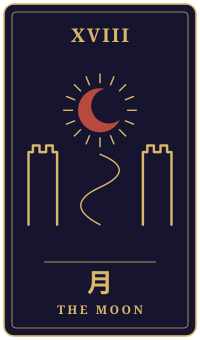

行き止まり
物語の手前に、ひとつの相談がありました。三枚のタロットをめぐるやりとりを、聞こえたままに書き留めています。
持ち込まれた相談
地図の会社で、道路の情報を入力する仕事をしています。紅葉の季節、実家のある山あいの集落に、観光の車が列をなして入り込むようになりました。ナビが細い生活道路を抜け道として案内しているらしく、父からは電話で「お前の会社のせいか」と言われました。いま会社から、その道を案内に使わせない設定を任されています。数字を一つ変えれば済む作業なのに、手が止まります。子どもの頃、誰も来ないあの道が嫌いで、早く出ていきたかった。車が押し寄せる映像を見て、少し胸がすっとした自分もいます。故郷を閉じる手伝いをしているようで、何が正しいのか分からなくなりました。
タロットの読み解き

過去
塔・正位置
塔の正位置が、最初に静かに立ち上がってきますね。ある日突然、足もとが崩れるような衝撃があったのでしょう。紅葉の季節に車が押し寄せ、父からの電話が届いた、あの出来事です。
ただ、塔が示すのは壊すことそのものより、長く見えなかった構造が露わになることだとも言えるかもしれません。子どもの頃から抱えてきた「早く出ていきたい」という思いと、いま目の前にある風景が、一本の線でつながって見えてきた瞬間なのかもしれませんね。

現在
吊るされた男・逆位置
今、手が止まっている理由は、吊るされた男の逆位置によく表れているように感じます。ぶら下がったまま動けずにいる姿は、がんばってきたのに報われないような、深い徒労感を映しているのでしょう。
数字を一つ変えるだけなのに手が止まるのは、それだけあなたが、故郷にも仕事にも誠実でありたいと思っているからではないでしょうか。どちらかを切り捨てられず、両方を抱えたまま我慢を重ねてきた疲れが、いま出ているのかもしれません。

未来
月・逆位置
月の逆位置は、霧が少しずつ晴れていく様子を映しているように思えます。今はまだ、何が正しいのか見えにくい状態かもしれません。
けれど、胸がすっとしたことも、父の言葉に胸が痛んだことも、どちらもあなたの本当の気持ちだと、霧の向こうで見えてくるかもしれません。答えを急いで出さなくてもよいと、このカードは静かに語っているようにも感じます。
最後に
過去の衝撃、いまの疲れ、そしてこれから見えてくる真実。三枚を通して見ると、あなたは故郷を閉じたいのでも、守りたいのでもなく、その間で揺れている自分を、ようやく正直に見つめ始めたところなのかもしれませんね。
数字を変えるかどうかという選択は、最終的にはあなた自身が決めることです。 会社の方にこの揺れを率直に話してみることや、父とも責める言葉ではなく、それぞれの思いを交わす機会をもつことも、ひとつの道になるかもしれませんよ。
帰り際の問い晴れてきた霧の向こうに、何が見えてきたか。
読み解きは、タロット占い「月夜のアルカナ」が、この相談と引かれた三枚から返したものです。小説は同じ三枚を、別の角度から描いています。相談者は物語のための架空の人物です。相談文・読み解き・短編本文は、いずれも生成AIを使って制作しています。
物語に戻る